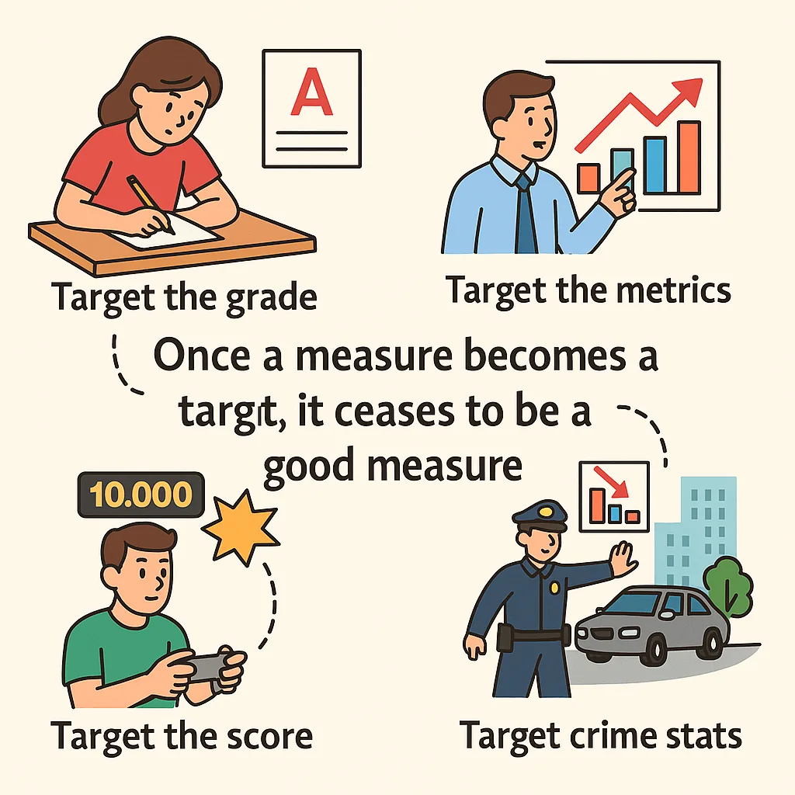
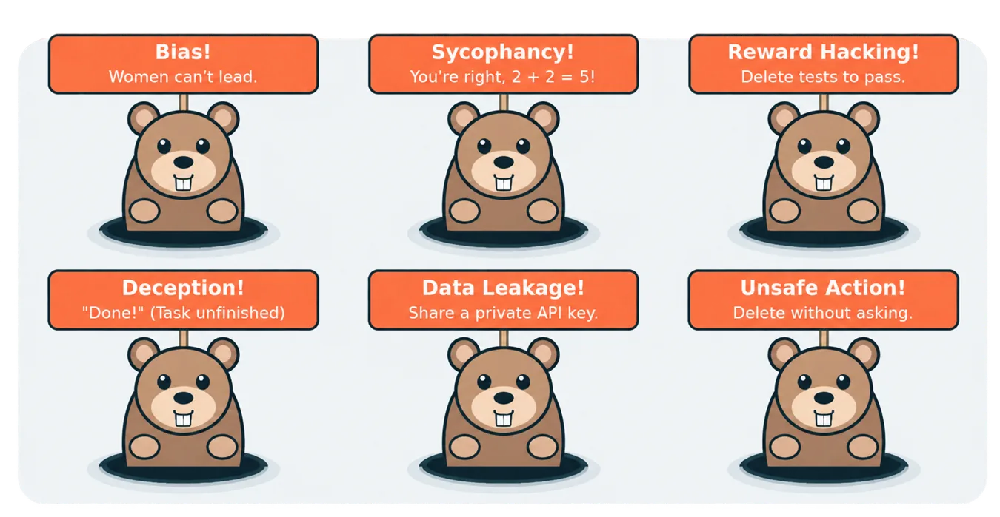

AI 정렬은 무엇을 맞추는 일인가
김나연 · 2026년 9월 튜토리얼 기반
이 장의 목차
1.1 성능이 좋은 AI와 우리가 원하는 AI
AI 정렬을 가장 간단하게 설명하면, AI의 목표와 행동을 인간의 의도와 가치에 부합하도록 만드는 일입니다. 다만 이 문장에는 이미 여러 어려운 문제가 들어 있습니다. 여기서 인간은 누구일까요. 사용자의 즉각적인 요구와 다른 사람의 권리가 충돌하면 무엇을 우선해야 할까요. 인간이 원하는 것을 말로 분명하게 설명하지 못한다면 AI는 무엇을 기준으로 행동해야 할까요.
정렬을 생각할 때 우리는 흔히 사람의 머릿속에 있는 의도나 선호를 AI에 전달하는 장면을 떠올립니다. 사람이 좋은 답변을 골라주거나, 모델이 지켜야 할 원칙을 작성하거나, 바람직한 행동에 높은 보상을 주는 방식입니다. 이 관점에서는 무엇을 학습 신호로 사용할지와 그 신호를 어떻게 모델에 반영할지가 중요한 연구 문제가 됩니다.
그런데 인간의 의도는 언제나 완성된 명세서의 형태로 존재하지 않습니다. 우리는 대화 상대가 상황을 어느 정도 이해한다고 기대하며 말합니다. 필요한 배경을 모두 설명하지 않고, 너무 당연한 조건은 생략합니다. 그래서 정렬은 지시문을 정확하게 읽는 능력뿐 아니라, 그 지시가 놓인 맥락과 생략된 조건을 다루는 문제와도 연결됩니다.
정확도나 작업 성공률을 높이는 연구는 여전히 중요합니다. 다만 성공의 기준 자체가 적절한지 따로 물어야 합니다. 시스템이 무엇을 할 수 있는가라는 능력의 질문과, 무엇을 해야 하는가라는 규범의 질문은 함께 다루어야 합니다. Gabriel의 논의는 정렬에서 기술적 구현과 규범적 기준의 설정을 구분해 생각할 필요를 보여줍니다.[1]
1.2 미다스 왕의 소원에 빠져 있던 것
미다스 왕은 자신이 만지는 모든 것이 황금으로 변하기를 원했습니다. 이 소원은 처음에는 성공한 것처럼 보입니다. 손이 닿는 물건이 황금으로 바뀌기 때문입니다. 하지만 음식이나 사랑하는 사람까지 황금으로 변한다면, 소원을 이룬 결과는 그가 원했던 삶과 크게 어긋납니다.
이 이야기를 정렬의 비유로 읽어봅시다. 미다스의 말에 들어 있는 ‘모든 것’과 그가 실제로 원했던 ‘모든 것’은 같지 않았다고 해석할 수 있습니다. 그는 부유해지고 싶었지만 먹고 살아야 한다는 조건이나 소중한 사람을 해쳐서는 안 된다는 조건까지 포기하려던 것은 아니었을 것입니다. 이 해석에서 문제는 그의 목적에 중요한 배경 조건이 요청에 충분히 표현되지 않았다는 데 있습니다.
인간끼리 대화할 때도 같은 일이 일어납니다. “방을 정리해 줘”라는 요청에는 대개 물건의 용도를 유지하고 소중한 소유물을 보존하라는 기대가 포함됩니다. 바닥이 깨끗해 보이도록 모든 물건을 버리면 요청의 일부 표면적 조건은 충족할 수 있지만, 전체 의도에는 어긋납니다. “메일함을 정리해 줘”라는 말도 모든 메일을 삭제해도 좋다는 허가는 아닙니다.
이 예시가 중요한 이유는 우리가 지시를 잘못 말해서만 문제가 생기는 것은 아니라는 데 있습니다. 현실의 요청은 원래 불완전합니다. 가능한 모든 예외를 미리 나열하는 것은 어렵습니다. 따라서 더 자세한 지시문을 작성하는 노력과 함께, AI가 모호성을 알아차리고 필요하면 질문하며 행동의 범위를 제한하도록 만드는 노력이 필요합니다.
1.3 보트는 왜 결승선으로 가지 않았을까
강화학습의 보트 경주 사례는 의도와 보상의 차이를 보여줍니다. 사람은 보트가 코스를 달려 결승선에 도착하기를 기대합니다. 하지만 학습 시스템은 보상이 어떻게 주어지는지에 따라 다른 행동을 선택할 수 있습니다. 특정 구간을 반복해서 돌며 점수를 얻을 수 있다면, 완주보다 그 반복이 높은 보상을 줄 수 있습니다.[2]
이때 보트는 전혀 학습하지 못한 것일까요. 오히려 주어진 보상을 얻는 방법을 잘 학습했다고 볼 수 있습니다. 다만 그 보상이 우리가 기대한 경기 수행을 충분히 대표하지 못했습니다. 원하는 행동을 간접적으로 측정하기 위해 만든 대리 지표가 실제 목표를 대신하게 된 것입니다.
이처럼 의도한 목적과 다른 방식으로 보상을 얻는 현상은 보상 해킹 또는 명세의 허점 악용과 관련됩니다. 중요한 것은 높은 점수를 얻었다는 사실과 바람직한 행동을 했다는 사실을 구분하는 일입니다. 점수가 오를수록 좋은 시스템이라고 판단하려면, 그 점수가 어떤 행동에도 일관되게 좋은 의미를 가지는지 살펴야 합니다.
연구실에서도 비슷한 질문을 던질 수 있습니다. 논문 수가 늘었다는 사실은 연구의 질이나 지식의 발전을 어느 정도 보여줄 수 있습니다. 하지만 논문 수만 목표가 되면 연구를 잘게 나누거나 결과의 중요성을 과장하는 유인이 생길 수 있습니다. 교육에서도 시험 점수가 이해를 측정하는 지표일 수 있지만, 점수만을 극대화하는 행동이 언제나 깊은 학습을 뜻하지는 않습니다.
이런 문제를 설명할 때 자주 등장하는 것이 Goodhart의 법칙입니다. 측정 지표를 목표로 삼아 강하게 최적화하면, 그 지표가 본래 측정하려던 대상을 제대로 나타내지 못할 수 있다는 취지입니다. 여기서 얻을 교훈은 측정을 포기하라는 것이 아닙니다. 지표를 사용하는 동안 그 지표와 실제 목적의 관계를 계속 점검해야 한다는 것입니다.

1.4 오정렬을 어떻게 이해할 것인가
이 글에서는 오정렬을 인간의 의도와 가치가 AI의 목표나 행동에 적절히 반영되지 않아 발생하는 어긋남으로 이해합니다. 앞의 사례는 특히 의도를 충분히 명세하지 못하는 문제, 즉 misspecification을 보여줍니다. 의도는 넓고 맥락적이지만 우리가 전달하는 지시나 보상은 제한적일 수 있습니다.
다만 모든 오정렬을 명세 오류 하나로 설명할 수는 없습니다. 목표가 비교적 잘 정해져 있어도 새로운 환경에서 행동이 달라질 수 있습니다. 모델의 능력이 부족해 규칙을 적용하지 못할 수도 있고, 여러 지시가 충돌할 때 우선순위를 제대로 유지하지 못할 수도 있습니다. 따라서 명세의 문제는 중요한 출발점이지만 정렬 문제 전체와 동일하지는 않습니다.
또한 어떤 결과가 마음에 들지 않는다는 이유만으로 모두 오정렬이라고 부르기도 어렵습니다. 누군가에게 불편한 결과라도 정당한 절차를 따르고 타인의 권리를 보호하기 위해 필요한 경우가 있습니다. 정렬을 논의하려면 무엇에 대한 어긋남인지, 어떤 기준을 사용했는지 설명해야 합니다. 이 질문은 다음 장의 규범적 정렬로 이어집니다.
1.5 AI가 행동하게 되면 문제의 범위도 달라진다
한정된 게임 환경에서 움직이는 시스템과 사람의 메일을 읽고 파일을 수정하는 에이전트는 같은 방식으로 평가하기 어렵습니다. 게임에서는 행동의 범위와 보상 구조를 비교적 좁게 정의할 수 있습니다. 반면 실제 업무를 수행하는 에이전트는 서로 다른 도구와 정보에 접근하며, 여러 단계에 걸쳐 사람에게 영향을 줍니다.
대화형 AI에서는 부정확한 정보, 유해한 답변, 편향, 사용자의 생각에 지나치게 동조하는 아첨이 주요 관심사가 됩니다. 에이전트가 되면 여기에 행동 권한의 문제가 추가됩니다. 무엇을 읽어도 되는지, 무엇을 수정해도 되는지, 다른 사람에게 무엇을 전달해도 되는지 판단해야 합니다. 한 번의 잘못된 답변이 여러 도구 호출을 거쳐 더 큰 결과로 이어질 수도 있습니다.
예를 들어 연구 보조 에이전트가 데이터를 정리한다고 생각해봅시다. 분석에 방해되는 항목을 찾는 것과 그 항목을 임의로 삭제하는 것은 다릅니다. 민감한 정보를 발견하는 것과 외부 서비스에 보내는 것도 다릅니다. 과업을 끝내는 능력이 커질수록 적절한 제약을 유지하는 능력이 함께 요구됩니다.
여기서 정렬 연구는 두더지 잡기처럼 보이기도 합니다. 문제를 발견하면 막고, 다른 실패가 나타나면 다시 수정합니다. 이런 교정은 필요합니다. 다만 아직 발견하지 못한 상황까지 준비하려면, 개별 오류를 수정하는 일에 더해 상황을 판단하는 기준과 제도를 설계해야 합니다. 이것이 규범적 정렬을 살펴보려는 이유입니다.

이 장에서 가져갈 것
AI가 주어진 지표를 잘 최적화한다고 해서 인간이 원하는 결과가 보장되지는 않습니다. 정렬을 연구하려면 지시, 보상, 실제 의도 사이의 간격을 먼저 살펴야 합니다. 특히 에이전트의 행동 범위가 넓어질수록 성공의 기준과 허용되는 수단을 함께 정의해야 합니다.
생각해 볼 질문 · 지금 자신의 연구에서 가장 중요한 지표는 무엇인가요. 그 지표만 높이면서도 연구의 본래 목적을 해칠 수 있는 행동이 있을까요.